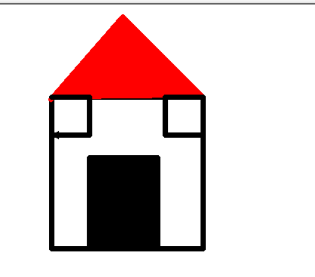
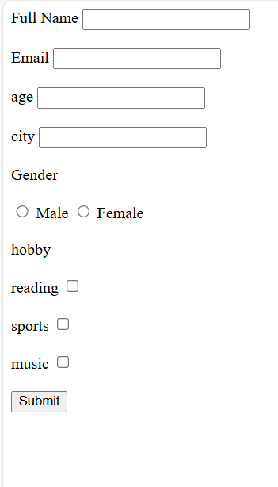

მთავარი ინფორმაცია რაც უნდა იცოდე ჩემს შესახებ:მე ვარ ბექა შანთაძე 15 წლის აჭარიდან კერძოდ კი ხულოდან.ჩემი ჰობი არის ფეხბურთის თამაში და წიგნების კითხვა.ჩემი საყვარელი წიგნი არის ნოდარ დუმბაძის წიგნი:"მზე ჭალა და პურის ყანა.ასევე მე ვსწავლობ ყველაზე მაგარ,საინტერესეო,შედეგებზე ორიენტირებულ აკადემიაში მისი სახელია goal oriented academy.გოაში მე ბევრი რამ შევისწავლე იმდენად ბევრი რამ რომ შემიძლია დამოუკიდებლად საიტი შევქმნა და მასში მოვათავსო პატარ-პატარა ელემენტები.ჩემი მენტორი და მასწავლებელი არის ლუკა გურგენიძე რომელის ძალიან კარგად ხსნის და გვასწავლის სხვადასხვა საკითხებს მისი დამსახურებაა,რომ აქამდე მოვედი.ჩემი მიზანია,რომ გავხდე ერთ-ერთი საუკეთესო პროგრამისტი და ვიყო სახელგანთქმული ჩემი პროფესიით.ასევე მინდა ამით რომ ჩემმა მშობლებმა იამაყონ.მინდა გაჩვენოთ ჩემი შექმნილი და გაკეთებული რამდენიმე დავალება და იმედი მაქვს მოგეწონებათ.
my created tasks.
ეს ჩემი პირველი დავალება იყო გოას აკადემიაში მართალია იდეალური არ არის მაგრამ დასაწყისისთვის კარგია.
ეს კი ჩემი შექმნილი რეგისტრაციაა html-ში.